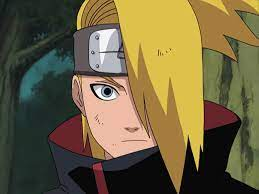
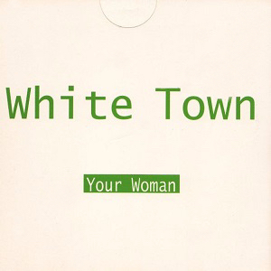
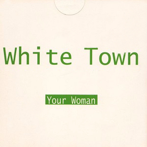

Akatsuki is a group of rouge ninjas. They were some of the best ninjas from their respective villages. The Akatsuki's mission is world peace. They aim to achieve this goal by putting the entire world under an illusion spell. The Akatsuki's signature colors are black and red, whose inspiration is visible on this website.

Konan exists to protect Nagato, and then he died, like all her friends. To want to be the "Only Heartbreaker" is to not be heartbrokened. Song by the one and only mitski.

Deidara's art is explosive, literally. He died doing what he loved, exploding himself. His life would be epic if paired with AC/DC's 'Thunderstruck.'


Hidan's a religious guy who cannot died but is buried in the dark. If someone ever digs him up, his comeback song should be Leonard Cohen's 'You Want it Darker.'

Itachi is so sad. He deserves a good song like Thao's 'Temple.' What is war but brothers killing each other?

Kakuzu is a monster with monsters inside of him. Those monsters are his only friends, even though they became monsters because he killed them. A fitting song is 'Bury a Friend' by Billie Eillish.


Kisame loves killing things. I think he would listen to Queen's 'Don't Stop Me Now," as he kills people.

Nagato is violence for the greater good like Rage Against the Machine using a monk on fire to make a political statement. Song:'Killing in the name.'

Orochimaru used to be a good guy, turned bad guy, and then good guy. He needs to pick a side! He was the real bad guy before all the bad guys like Nicki in 'Chun-li.'

Sasori got killed by his grandmother, which he deserved (he's so hot!). Seinabo Sey's 'Pistol at Dawm' is a perfect manifestion of the tension between a grandson dualing with his teacher/grandmother.

Tobi is pretty cool as an adult, but he struggled as a kid. If Tobi was a millenial, he would have Foster the People's "Pumped Up Kicks" on his ipod shuffle.
 

I don't understand what Zetsu is, but he is not enough. I think he would like White Town's 'Your Woman.'